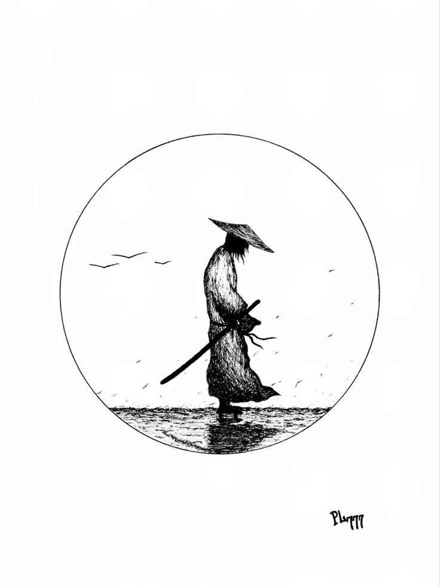
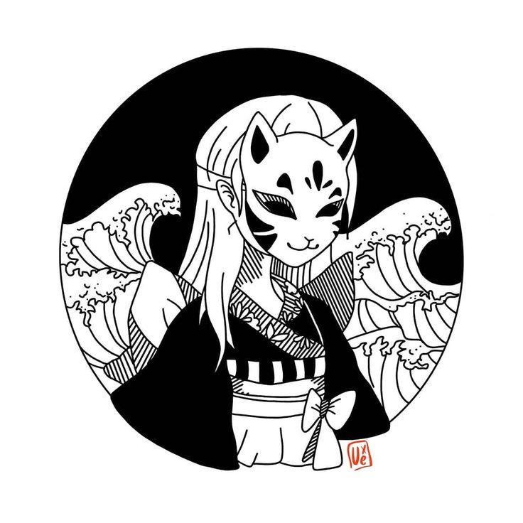
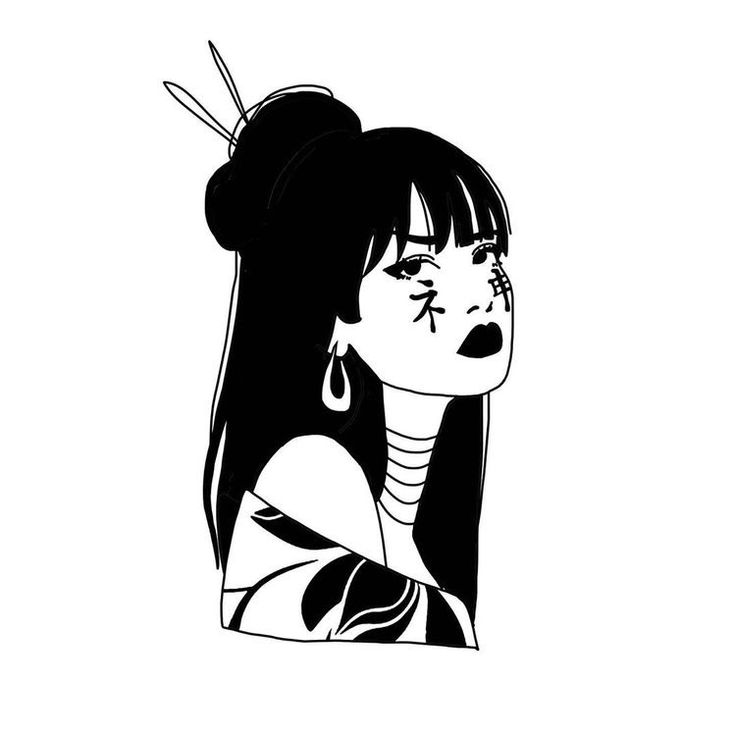
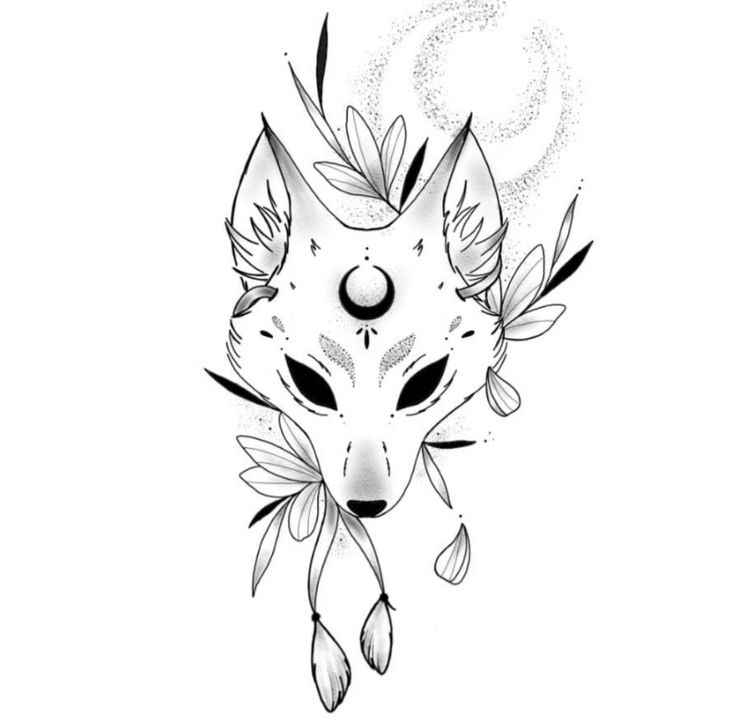
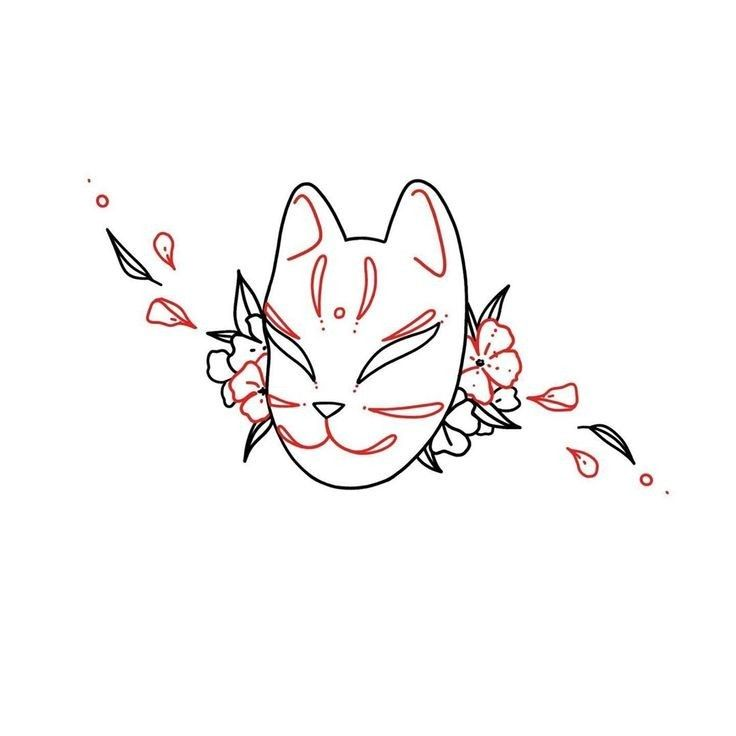
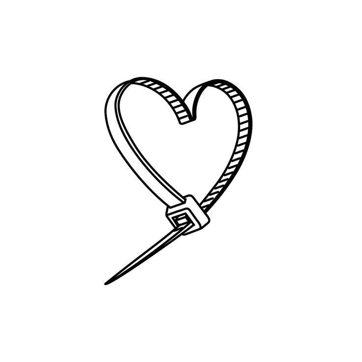
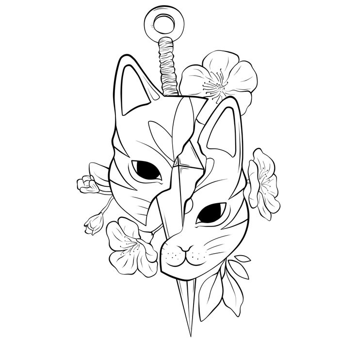
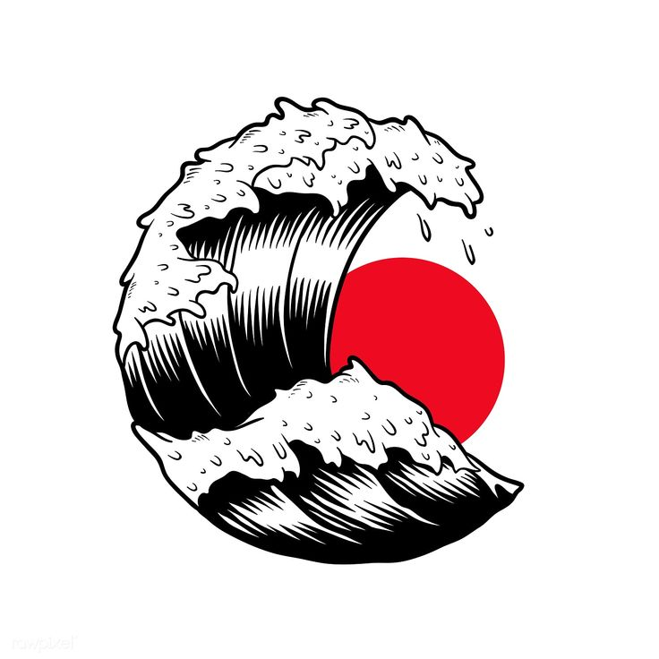
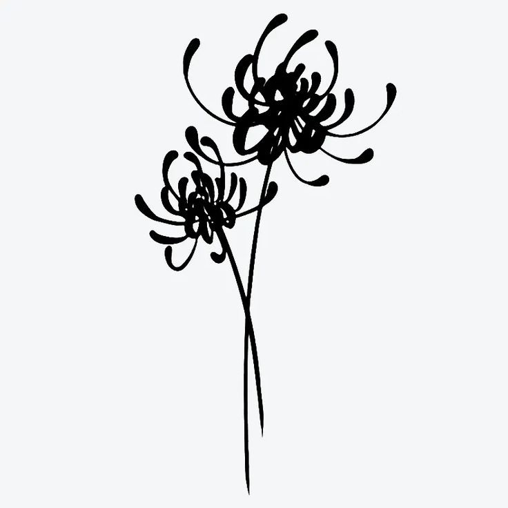
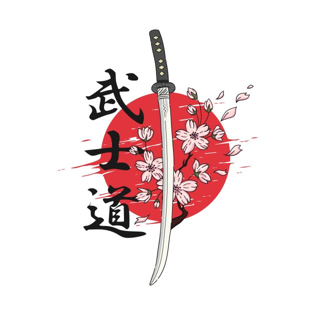

JAPON STİLİ DÖVMELER
Japon stili dövmeler, derin anlamlar ve estetik detaylarla kişisel ifadenizi zenginleştiren bir yoldur. Geleneksel Japon motifleri, güç, cesaret ve doğanın güzellikleri gibi sembollerle doludur. Her dövme, geleneksel Japon sanatının özünden ilham alarak benzersiz bir hikaye anlatır. Bu tarzın bazı örnekleri:

Sensei

Kitsune Girl

Geisha

Moon Wolf

Kitsune

Clik Hearts

Sakura Cat

Waves And Moon

Flowers
Ying Yang Fish
Love is Posion
Spirited Away

Sakura and Katana
Sakura
Maneki Neko